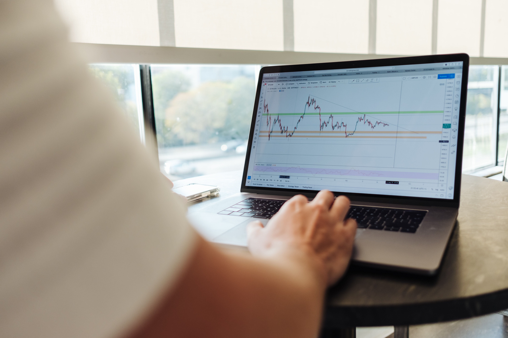

오늘 동원F&B에 내 돈 50만원을 투자했다. 투자를 한 이유는 식품 관련 기업 자체가 지수에 비해서 많이 안 올랐다는 사실과, 식품주 중에서 CJ제일제당 주식 가격이 상당히 오른 추세인데에 반해서 동원F&B는 코로나 이전의 주가조차 회복하지 못했다는 이유 때문이다. 더군다나 집 밖에서 식사가 꺼려지다보니 간편식의 매출이 증가하였고 우리나라 식품이 또 다른 한류를 만들어 앞으로 넓어진 시장에서 더 많은 매출을 기대해 볼 수도 있어서 유망하다고 생각했다. 그리고 꾸준히 영업현금과 잉여현금이 증가하는 추세였기 때문에 장기투자와 높은 수익률을 기대하기에도 알맞을 것이라 생각했다.
하지만 내가 아직은 초보인지라 이런 판단 이외에 다른 분석도 해야한다는 것을 알지 못했고 다른 영상을 보다가 같은 업종 내에서 시총, 매출액 증가율, 영업이익 증가율, ROE 등등을 비교해서 종목을 관찰한 뒤 각 종목이 진짜 저평가인지 아니면 숨겨진 리스크가 존재하는지 여부를 살펴보아야 한다는 것을 알았다. 그리고 각 기업의 총수와 영업현금 증가율, 잉여현금 증가율 등등도 표로 정리해서 본다면 좋을 것 같다는 생각이 들었다.
앞으로도 이렇게 투자하기 전에 글로 내가 이 기업을 사는 이유를 정리하고 산 이후에 내가 더 개선해야할 부분이 있다면 이를 정확하게 파악해서 적어가는 것이 좋을 것 같다.
